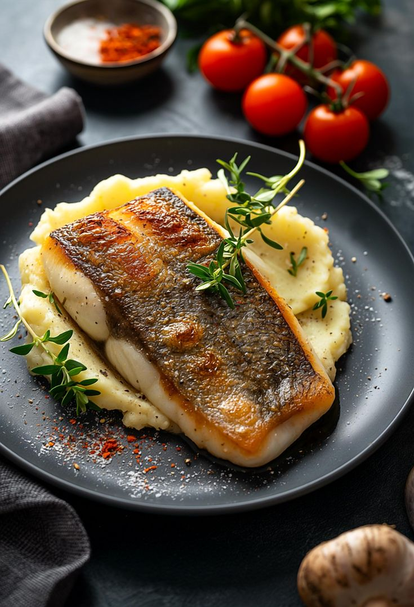

Grilled Sea Bass with Herb Butter
Ingredients
- 2 sea bass fillets
- 2 tbsp olive oil
- Salt and pepper to taste
- 2 tbsp butter, softened
- 1 clove garlic, minced
- 1 tbsp fresh parsley, chopped
- 1 tsp lemon zest
Instructions
- Preheat grill to medium-high heat.
- Brush sea bass with olive oil and season with salt and pepper.
- Grill fish for 4-5 minutes per side, until cooked through.
- In a small bowl, mix butter, garlic, parsley, and lemon zest.
- Serve grilled sea bass with a dollop of herb butter on top.
Back to Cookbook